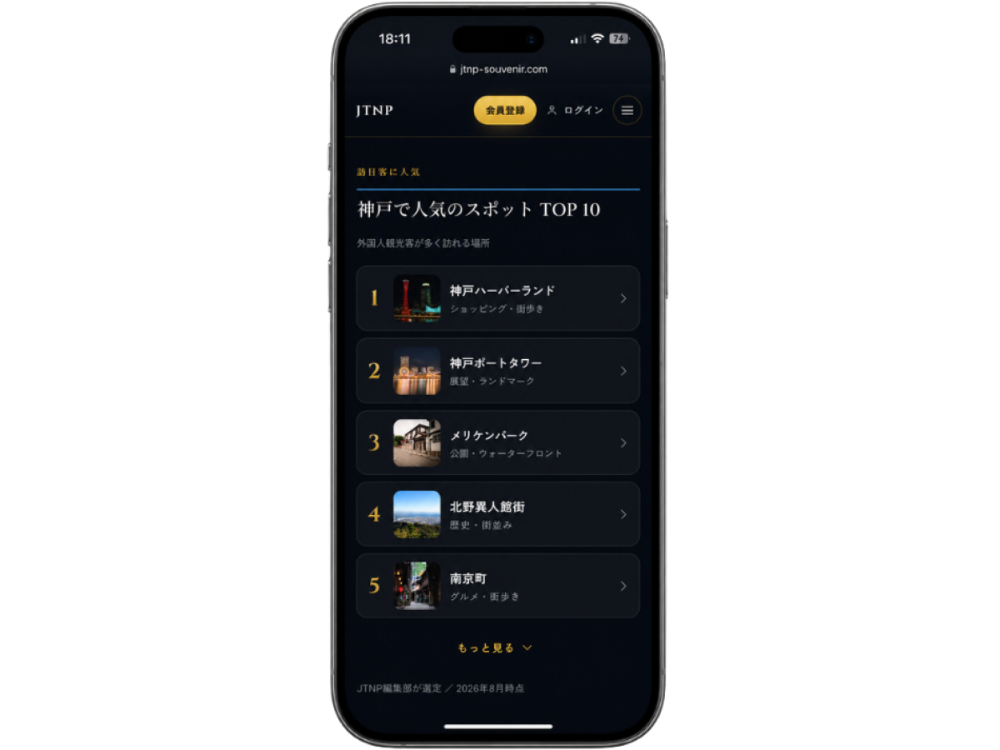
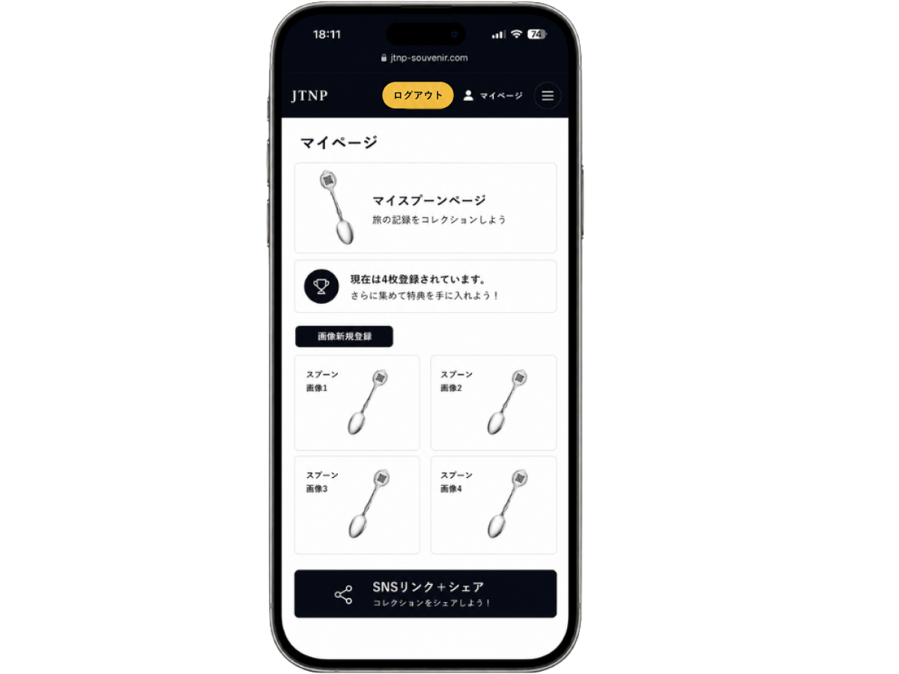

01
旅先でスプーンを手に入れる
日本各地の観光地をモチーフにした、JTNPスーベニアスプーン。
About JTNP
JTNP-SOUVENIRは、日本各地の観光地をかたどったスーベニアスプーンのプロジェクト。購入したスプーンのQRからその土地を知り、集めるほど旅が広がります。
日本各地の観光地をモチーフにした、JTNPスーベニアスプーン。

スプーンのQRコードをスマートフォンで読み取り、その地域の観光情報へアクセス。

会員登録して各地のスプーンをコレクション。集めた数などに応じた特典も予定しています。
Explore Japan
都道府県を選ぶと、その中の観光地が表示されます。地図を使わずに一覧から選ぶこともできます。
都道府県から選ぶ
地図と同じ情報です。どちらから選んでも同じ場所に移動します。
The Collection
現在つくられているスーベニアスプーンの一覧です。並び順は地理と無関係で、タップすると直接そのArea Pageへ移動します。
Japan Tourism Networking Project
会員登録をすると、集めたスプーンをMy Pageに記録できるようになります。訪れた場所が増えるほど、コレクションが育っていきます。
会員登録